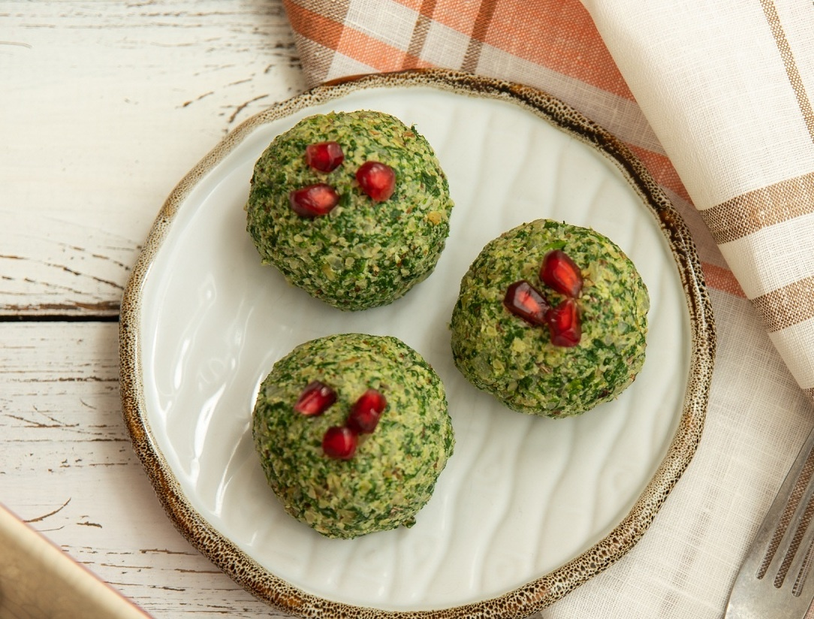

Рецепт Пхали

Ингредиенты:
- 250 г свеклы (вареной и очищенной)
- 150 г грецких орехов
- 1-2 зубчика чеснока
- 1 небольшая луковица (по желанию)
- 1 ч. ложка уксуса (по вкусу)
- 1 ч. ложка соли
- Специи (по вкусу)
- Зелень (кинза или петрушка, для подачи)
Приготовление:
- В блендере измельчите грецкие орехи до мелкой крошки.
- Добавьте вареную свеклу, чеснок, соль, уксус и специи. Измельчите до однородной массы.
- Отрегулируйте консистенцию, добавляя орехи или воду по необходимости.
- Сформируйте из массы небольшие шарики или лепешки.
- Охладите Пхали в холодильнике в течение нескольких часов.
- Подавайте, украсив свежей зеленью.